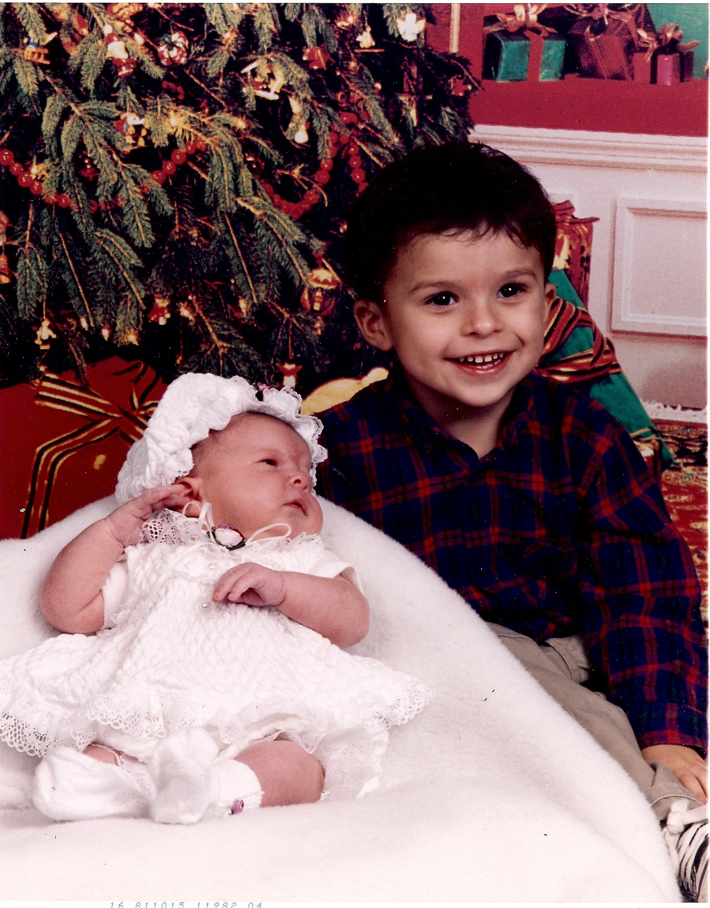

About

Hello there! I hope you are having a awesome day. My Name is Aaron Donald Federico Alvarado and I specialize in I.T. and computer programming am 25 years old and located in North Hills, California. Currently I am attending college pursuing aa master’s degree in Computer Science with the goal of becoming a software engineer. I’m a driven individual that will always go above and beyond what I’ve been asked to do and I take pride in a job well done. Please take some time to look through my website to get a better understanding of who I am and, again have a awesome day!
Please Forgive the roughness around the edges. This wesbite is always under construction as I use it to learn more HTML, CSS, and JavaScript
A Breif History
I was born in November of 1993 in San Diego and spent my early childhood in Escondido and Canyon lake. My family moved up to the Los Angeles area right as I became a teenager. Up to that point I have already had a few near-death experiences due to a deadly milk allergy I had growing up. I was also heavily involved with my church ever since a young age due to my parents always being involved. It was in there where I started my Volunteer work that that I’ve always had a strong interest in. When I was 13 I join Civil Air Patrol (more details here). For most of my grade school I was homeschool by my Mother, while unconventional it did allow me to focus on my skills and hobbies. This is around where I took a strong interest in computers. It was here where I built my first pc and made my first programs, a small h fan website for the Halo video game series and a number guessing game in python.
When I was 20, I joined the United States Air Force. I had a few jobs before hand but there were nothing more the placeholders until I was ready to join (If you earn the rank 2nd/lt in CAP you start in the USAF at E3). Once I enrolled however and shipped off for basic training, I ran into a road block. I didn’t know this at the time, but I had Hyperthyroidism. This condition permanently barred me from ever serving in any military branch. So only few days into basic I was placed into medical hold for two months and then sent back home, with my life goal of becoming a Pilot in the Air Force completely Destroyed.
After that slight set back spend some time recovering and made what have been up to that point just a hobby my career, started attending college for Computer Science. It was also around this point I took a strong interest in Astronomy and purchased my first telescope. Early in 2018 I was able to take part in a Internship at the Jet Propulsion Laboratory. It was this more than anything that solidified my goal to become a software engineer.
Goals

My Goal in life is to eventually work at JPL as a software engineer. Having said that I am currently still attending community college, So I have a few years before I reach that goal. In the meant time My goal is to be the hardest working and most dedicated person I can be in whatever I do. For the past 2 years I’ve been working as a Field Computer technician, services office computers and networks for car dealerships, making sure the Wifi stays up and keeping the computers (and yes, even the printers) running happy. All the while I am working on expanding my knowledge base in coding, I already know some languages like C++, Python, and HTML, and constantly working to learn more.
Interest

Nunc ut nunc sit amet tellus mollis interdum. Pellentesque at massa accumsan ex lacinia cursus in sit amet purus. Praesent id dapibus lectus, eget dapibus dui. Nam feugiat rhoncus nibh. Proin volutpat sapien quis tortor euismod, et molestie turpis vestibulum. Donec pellentesque volutpat mi vitae iaculis. Praesent vitae ligula urna. Aliquam venenatis lectus leo, eget vulputate nulla fermentum eget. Nam eu nisl sit amet orci tempor varius. Sed posuere tellus et tincidunt eleifend. Aliquam placerat risus diam, nec pharetra urna euismod vel. Curabitur interdum aliquam ex, ut vehicula odio varius feugiat. Proin quis arcu dignissim augue venenatis malesuada. Etiam commodo augue et sem mollis, et tempus lorem volutpat. Vestibulum ante ipsum primis in faucibus orci luctus et ultrices posuere cubilia Curae; Nulla vehicula consectetur auctor.